CH 01 · UNIFILAR
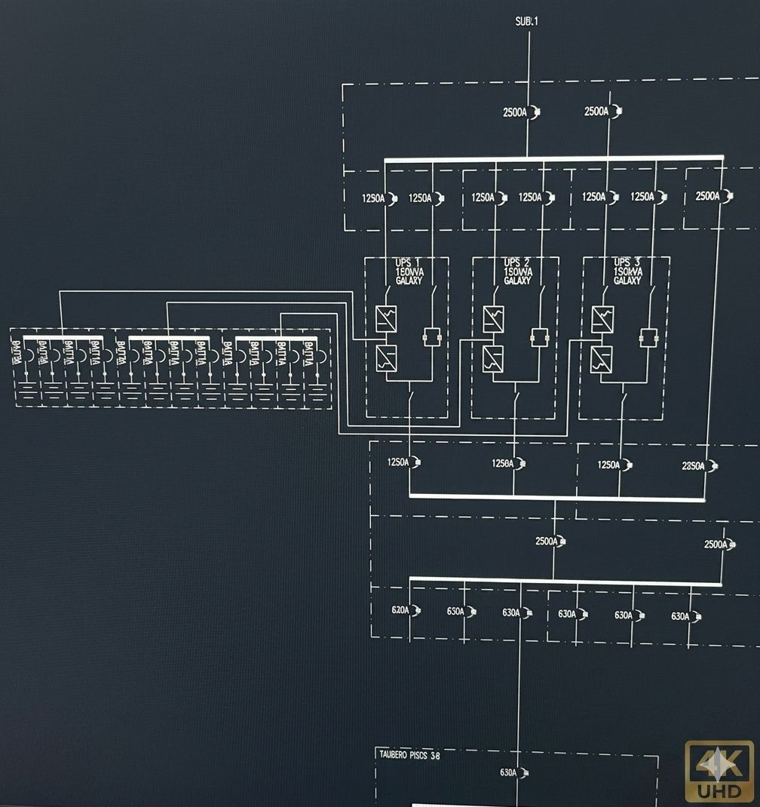
Gire su dispositivo
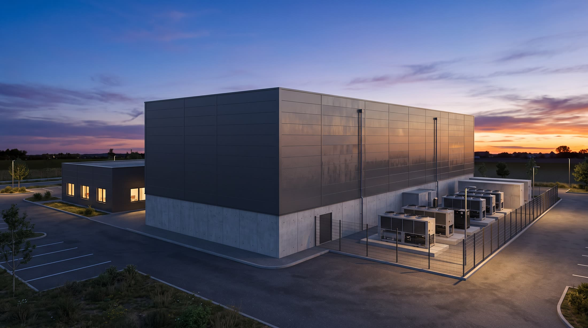
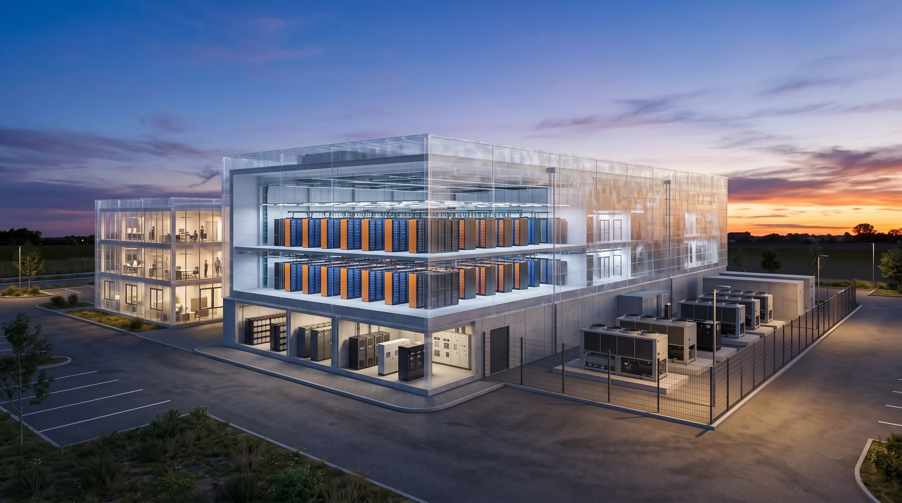
DATCER diseña, documenta y entrega data centers completos. Ingeniería de precisión para organizaciones que no pueden permitirse una interrupción.
01 / Ingeniería eléctrica
Dos cadenas eléctricas alimentan el edificio. Los mismos equipos y circuitos aparecen en el unifilar, la planta y la construcción.
La envolvente se abre para revelar la infraestructura que mantiene conectado al edificio.
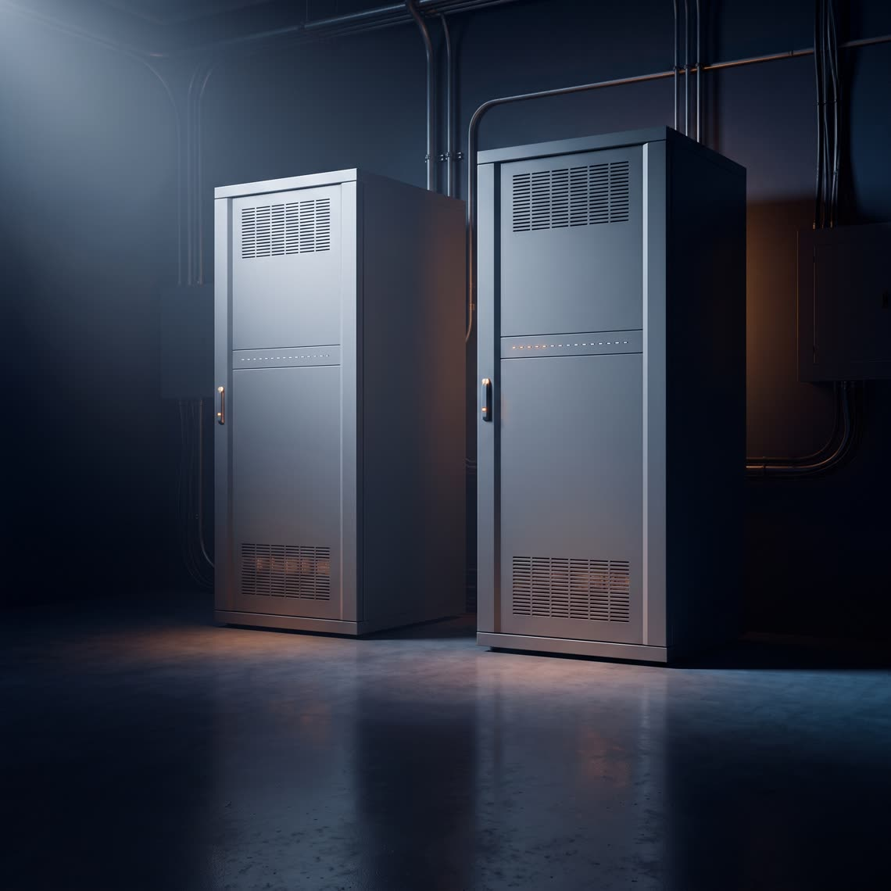
Arquitecturas N+1 y 2N en energía y enfriamiento. Ningún componente cuya falla, por sí sola, detenga la operación.
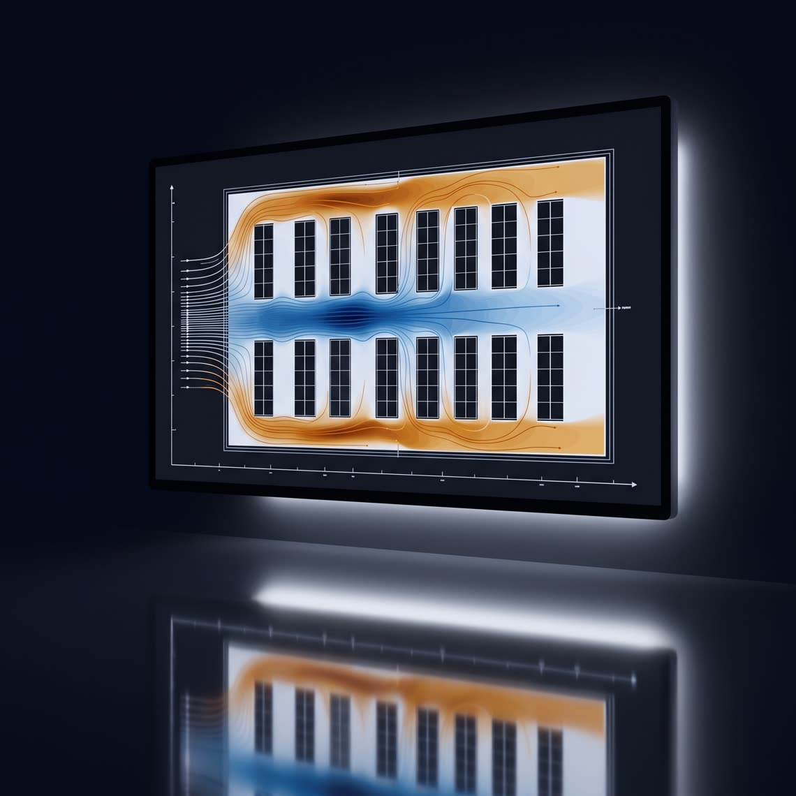
Protocolos de prueba L1 a L5, failover e IMTP. La instalación se entrega cuando demuestra que cumple lo que el diseño prometió.
Dimensionamiento por fases, de 4 a 20 gabinetes y más, sin rehacer la troncal ni la acometida eléctrica.
Modelamos la sala completa para validar densidad, contención térmica y rutas de distribución antes de que se instale el primer gabinete.
No en la obra.
Cada gabinete, cada bandeja, cada metro de tubería y cada watt estaban decididos, calculados y documentados antes de que existiera la sala.
Antes de trazar una línea hay que fijar la carga por gabinete, el factor de simultaneidad, la densidad objetivo y el nivel de redundancia. De esos números sale la planta — no al revés.
Para cuando llega el primer gabinete, cada decisión ya está tomada, calculada y escrita. La obra ejecuta un plano; no lo inventa sobre la marcha.
Trazamos el camino completo desde el diagrama unifilar hasta el modelo tridimensional, documentando y validando cada etapa antes de construir.

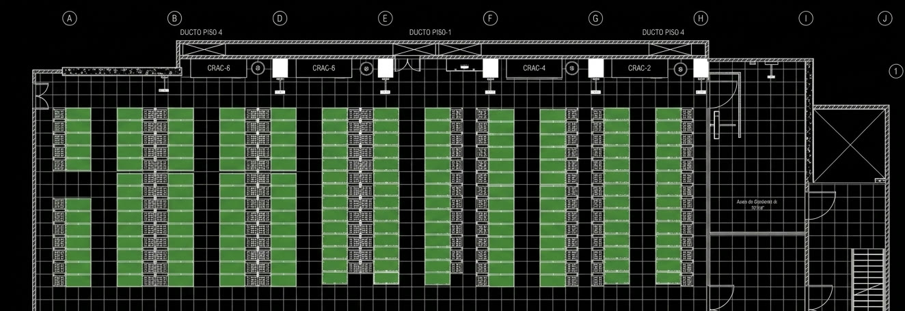
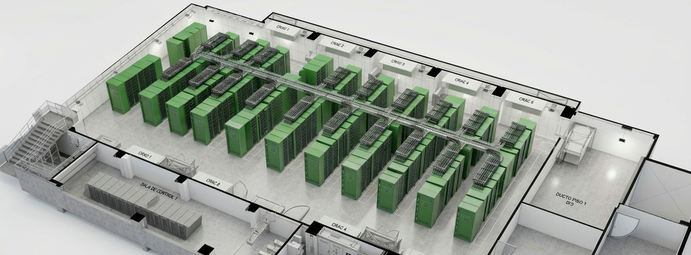
Análisis de cargas, sistemas UPS, distribución de potencia, redundancia y protecciones, bajo RETIE y Uptime Institute.
Un paquete que cualquier constructor puede ejecutar sin volver a preguntarnos, y que cualquier auditor puede revisar sin que se lo expliquemos.

Cargas eléctricas y térmicas, simultaneidad, caídas de tensión, cortocircuito y selectividad. Con los supuestos escritos.

De la acometida a la PDU de gabinete: reparto por fase, reservas por etapa y redundancia declarada circuito a circuito.

Planta de racks y pasillos, cortes, piso técnico, plenum y rutas de bandeja. En formato editable, no en PDF plano.

Interferencias entre estructura, clima, eléctrico y datos resueltas antes de que las encuentre el instalador.

CFD de la sala en operación: temperatura de entrada por gabinete, recirculación, puntos calientes y PUE estimado.

Criterios de aceptación L1 a L5 escritos antes de construir: qué medir, con qué, y qué valor aprueba.
VÓRTICE·CFD es nuestra herramienta propia de análisis de flujo de aire. Modela la sala completa — contención, difusores, plenum y altitud — y devuelve puntos calientes, recirculación y PUE estimado antes de que exista un solo rack.
Cobertura completa, desde la conceptualización hasta la puesta en marcha.
Ver los veintiocho en detalle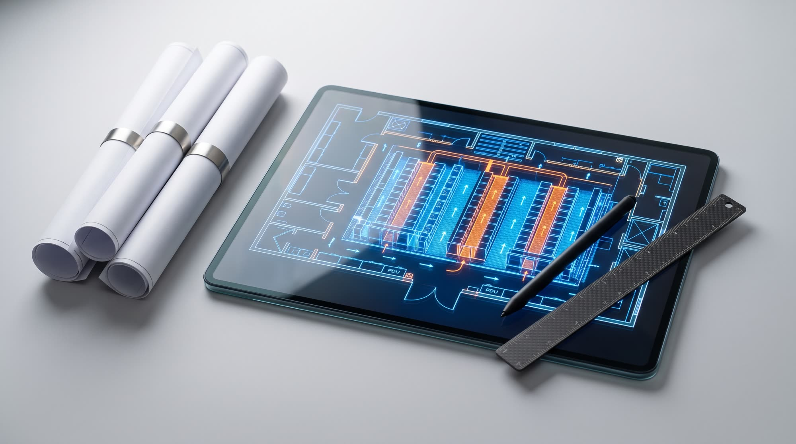
Diseño integral desde cero: layout, capacidad, redundancia y escalabilidad para instalaciones TIER I a IV.
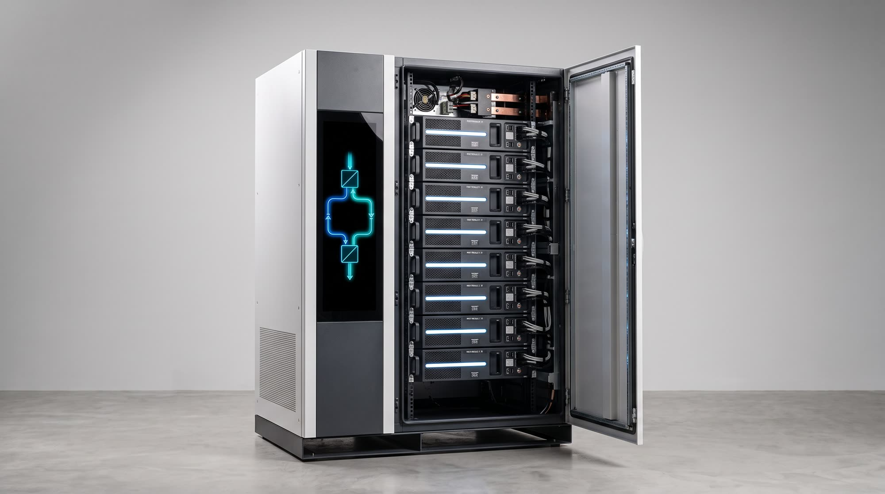
Sistemas de potencia crítica con acometidas redundantes y respaldo de generación con transferencia automática.
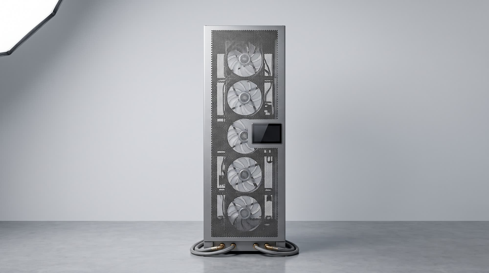
Climatización de precisión y gestión térmica integral, dimensionada sobre la densidad real de la sala.
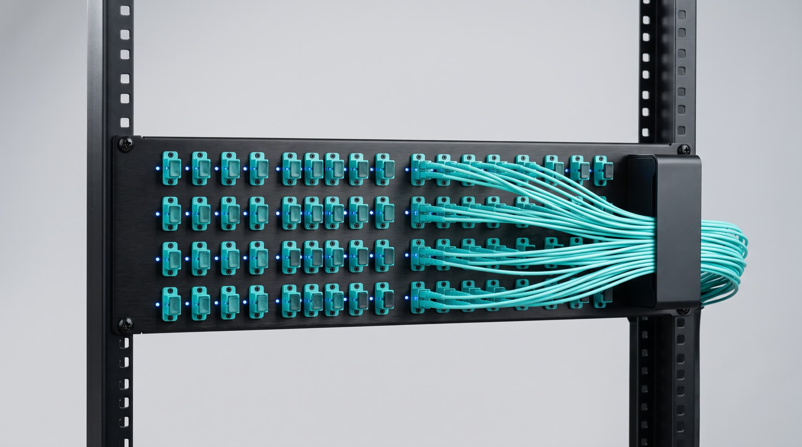
Infraestructura de conectividad en cobre y fibra, organizada para crecer sin rehacer la troncal.
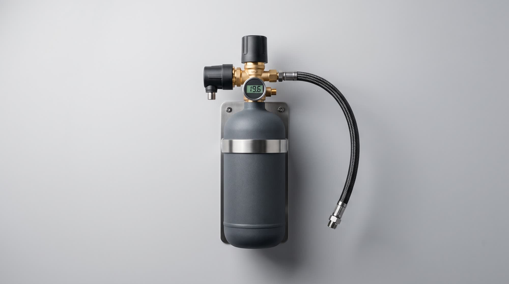
Detección temprana por aspiración y supresión con agente limpio, sin dañar el equipo activo.
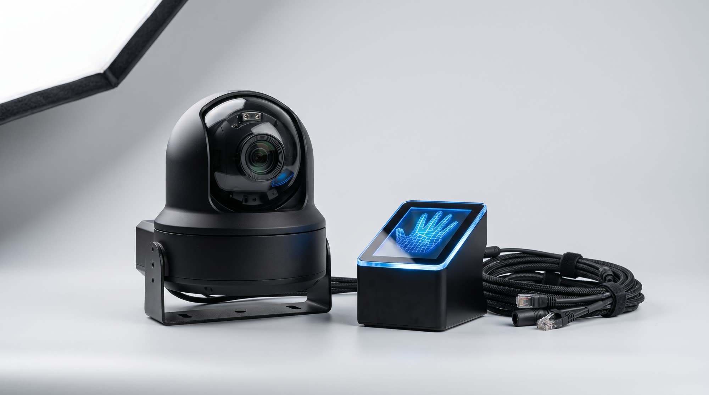
Arquitectura de seguridad escalonada por anillos, del perímetro al gabinete.
Visibilidad en tiempo real de energía, clima y capacidad, con alarmas antes de que el umbral se cruce.
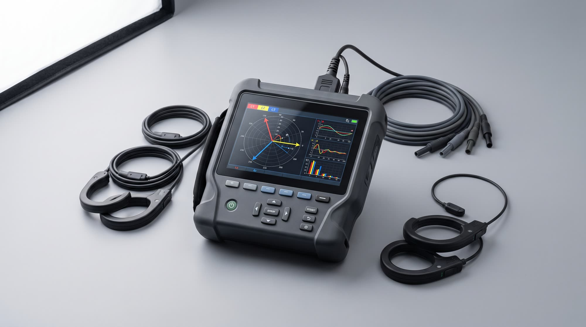
Evaluación técnica de instalaciones existentes, con hallazgos priorizados por riesgo y costo.
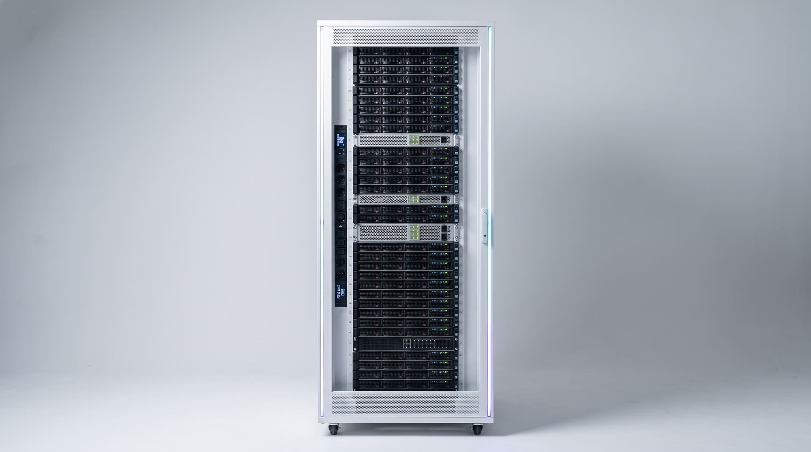
Salas compactas para medianas empresas, con las mismas prácticas de un data center grande.
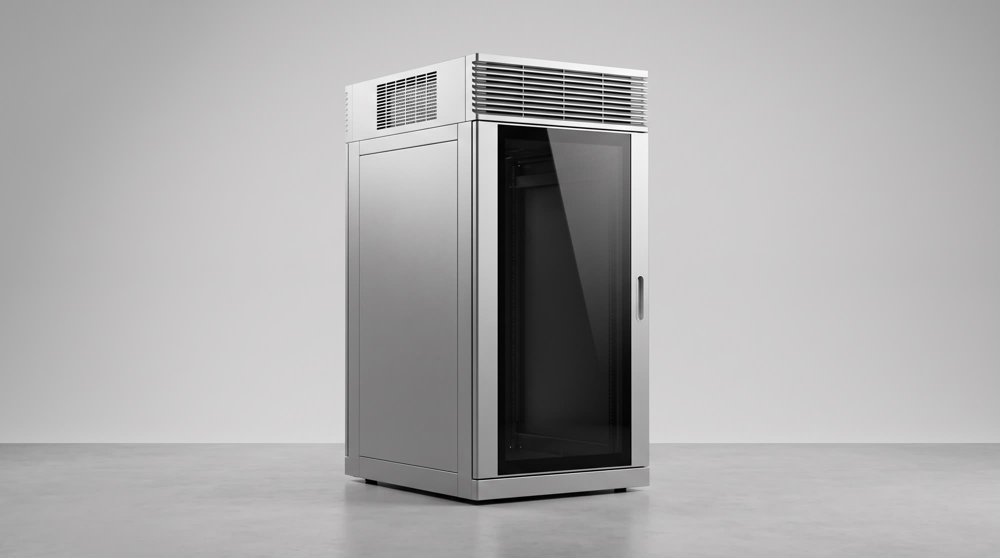
Nodos distribuidos y autónomos que acercan el procesamiento al punto de uso.
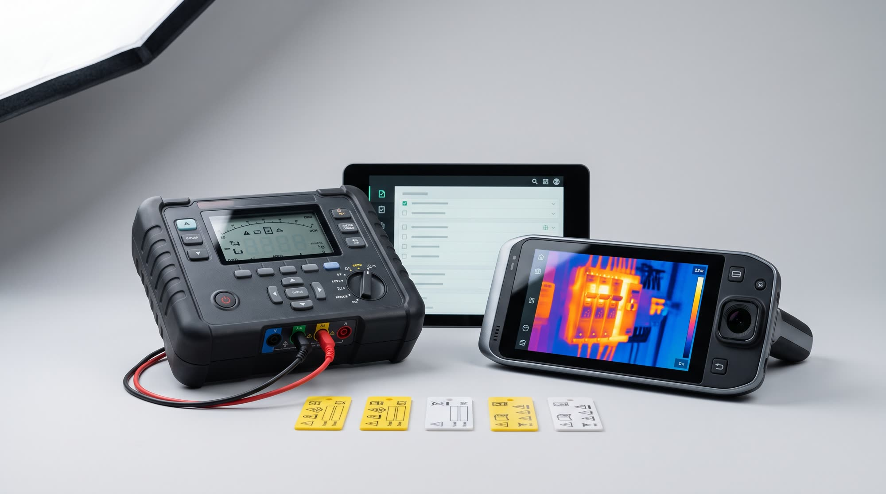
Verificación formal de que la instalación hace lo que el diseño prometió, documentada nivel por nivel.
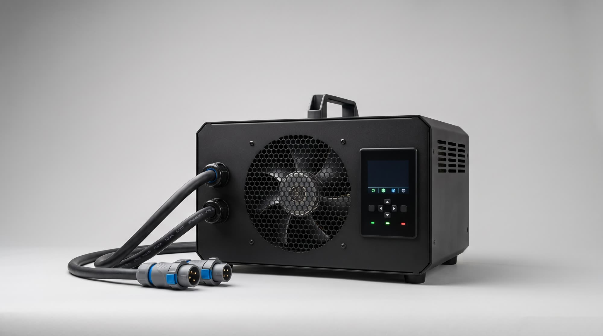
Prueba de capacidad real sobre generadores, UPS y tableros, bajo condiciones controladas.
Ajuste densidad, número de racks y nivel de redundancia. El resultado es un orden de magnitud para iniciar la conversación, no un diseño.
Dimensionamiento y planta de la sala, al instante
Estimación paramétrica de orden de magnitud, calculada sobre supuestos típicos de sala blanca. No sustituye un cálculo de cargas ni una memoria de diseño. Solicite un dimensionamiento formal para valores de proyecto.
Verificamos que su infraestructura eléctrica responda ante una falla real — antes de que ocurra. Pruebas controladas con instrumentación de precisión e informe certificable.
Escalones al 25, 50, 75 y 100 %Registro de tensión, corriente, potencia, frecuencia y temperatura en cada etapa, con informe certificable.
Aplicamos carga progresiva — 25%, 50%, 75% y 100% — registrando tensión, corriente, potencia, frecuencia y temperatura en cada etapa. Identificamos cuellos de botella antes de que fallen en producción.
Verificamos tiempos de conmutación, autonomía de baterías bajo carga real y comportamiento del generador en arranque, carga y estabilización.
Gráficas de tendencia, análisis de armónicas, registro de eventos, no conformidades y recomendaciones correctivas. Válido como soporte para auditorías de certificación TIER.
Coordinamos la prueba en ventanas de mantenimiento programadas. Nuestros bancos resistivos y reactivos son modulares: se instalan y retiran sin modificar la instalación permanente.
Cuatro razones que no son eslogan: se notan en cómo trabajamos y quedan por escrito en lo que entregamos.
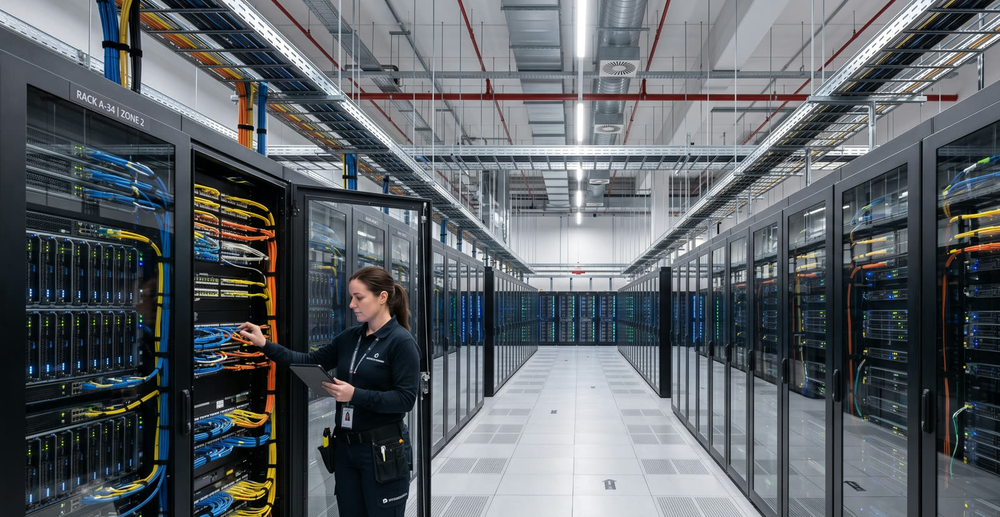
No hacemos redes de oficina ni TI general. En su proyecto no hay curva de aprendizaje: ya vivimos estos problemas.
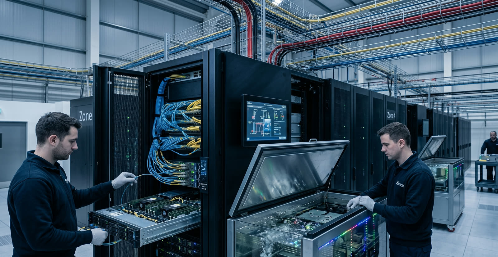
TIA-942, ASHRAE, Uptime Institute y EN 50600. Cada decisión tiene respaldo, y eso facilita certificar después.
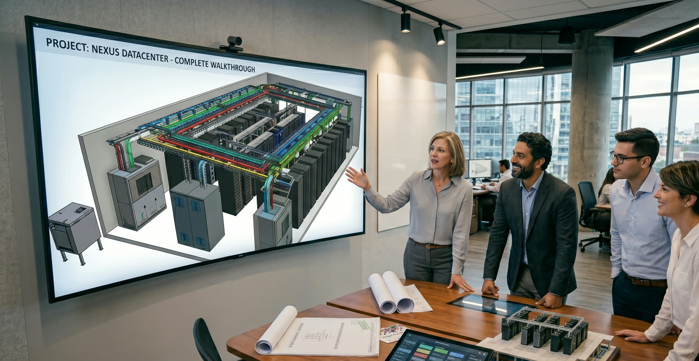
Dimensionamos con presupuesto, crecimiento, regulación y tolerancia al riesgo reales. No sobrediseñamos.
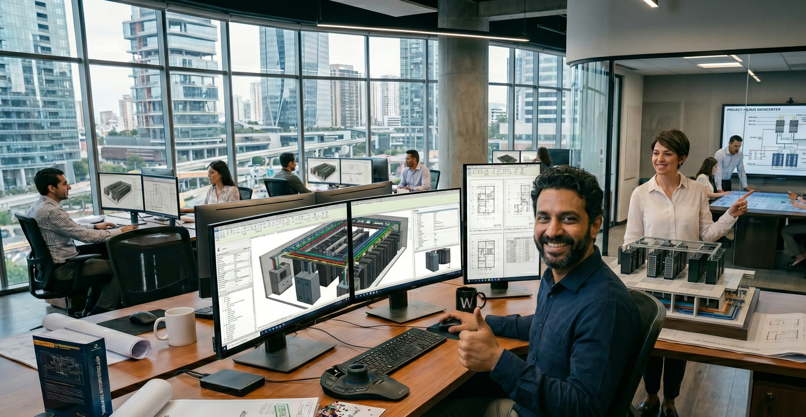
Planos as-built, unifilares, manuales de operación y protocolos de mantenimiento en cada cierre.
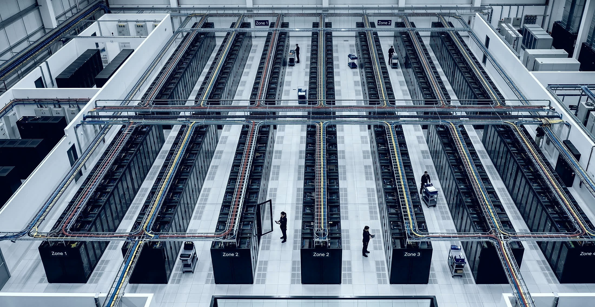
Gestionamos el proceso de principio a fin: evaluamos la brecha, desarrollamos la documentación técnica y le acompañamos ante la organización certificadora hasta obtener el dictamen.
Ocho industrias donde una caída no es un inconveniente técnico: es dinero, pacientes, producción o servicio público detenido.
Continuidad operativa y protección de datos del sector financiero.
01Misión crítica donde la disponibilidad impacta vidas.
02SCADA, MES y control industrial con alta disponibilidad.
03Picos de transacciones y operación 24/7/365.
04Investigación, e-learning y sistemas administrativos.
05Gobierno digital y continuidad del servicio al ciudadano.
06Nodos, carrier hotels y puntos de intercambio.
07Centros de control con resiliencia extrema.
08Una metodología estructurada que elimina sorpresas y garantiza resultados predecibles. Ninguna etapa empieza antes de cerrar la anterior.
Relevamiento técnico, requerimientos del negocio y restricciones del sitio.
01Arquitectura, selección de TIER, capacidad y presupuesto.
02Planos, especificaciones, memoria de cálculo y documentación.
03Acompañamiento en obra, control de calidad y resolución de imprevistos.
04Pruebas funcionales, failover, as-built y entrega formal.
05Confidencialidad garantizada · los proyectos se muestran con autorización expresa del cliente.
Respuesta en menos de 24 horas hábiles, directamente con el equipo de ingeniería.
Nacional e internacional — diseño remoto disponible en cualquier ubicación.
Gratuita y sin compromiso — auditoría técnica incluida para proyectos calificados.
Este sitio utiliza cookies. Consulte la política de privacidad.